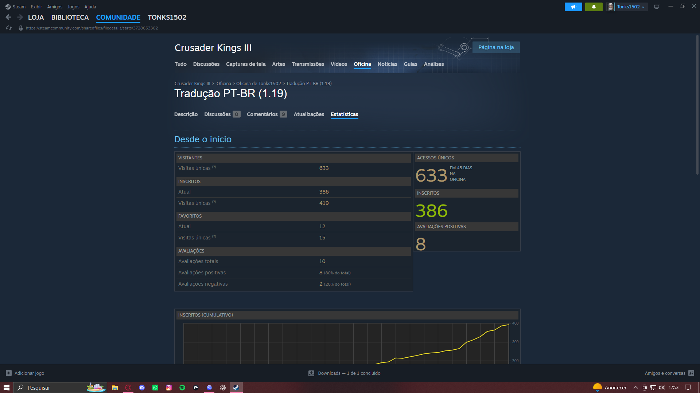
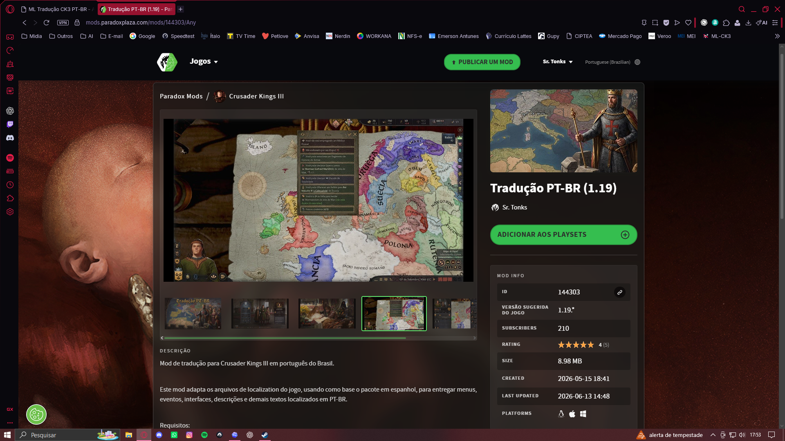

Produto real publicado • 793 inscritos
Machine Learning, NLP e engenharia de dados aplicados à tradução brasileira de Crusader Kings III.


O problema
Até você encontrar cultura, fé, títulos, gênero, eventos dinâmicos e contexto medieval mudando o texto em milhares de variações.
A escala
A entrega precisa lidar com corpus grande, revisão contínua e rastreabilidade de decisões.
A arquitetura
O sistema combina ML local, regras determinísticas, memória, revisão humana e gates de segurança.
Observabilidade
Métricas, filas, agentes, policies e progresso ajudam a decidir onde automatizar, revisar ou bloquear.
Segurança e qualidade
O objetivo é acelerar com segurança, sem deixar uma previsão virar publicação automaticamente.
Princípio do projeto
Produto publicado + engenharia aplicada em um projeto real com usuários reais.
Referências públicas
Links para usar na descrição da publicação, no primeiro comentário ou na página de portfólio.